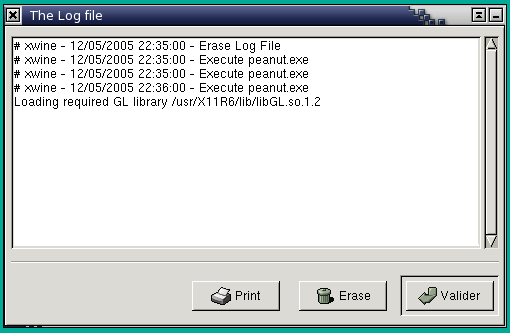

Chapitre 6. Advanced Use
6.1. Command Line Options
Since the version 1.0, XWine allows to use options on the command line :
-
xwine
: runs XWine
- xwine file.exe : runs the file.exe
application, under the XWine control
- xwine --config : displays only the XWine
Configuration Panel without running the XWine window
- xwine --version : displays the XWine version number
then quit
- xwine --help :
displays the list of the XWine options then quit
6.2. XWine Log File
Each action done through XWine is stored in a log file that you may
display by clicking on :
Start>Parameters>Watch the Log File (readable also through the
Configuration Panel).

Content of the file :
- the actions done within XWine : configuration, execution,
installation...
- the messages from Wine when executing an application
When you quit XWine you may store or reset the log file.
NOTE 1 : Do not hesitate to have a look on the log file, it may
give some very useful informations when you meet with some problems.
NOTE 2 : It is likely to print the content of the log by
clicking on the "Print" button.
6.3. XWine Taskbar
6.3.1. Taskbar
The main change in the version 0.1.4
is the addition of the taskbar, which allows to kill an application
(which would not work correctly) through the Kill
button.
The Refresh button
6.3.2. Reset
Added to the taskbar commands, the button Start>Programs>Reset